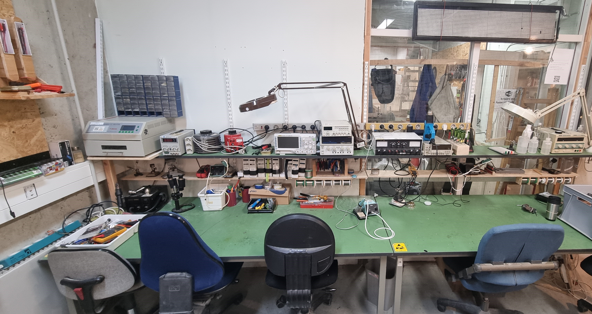
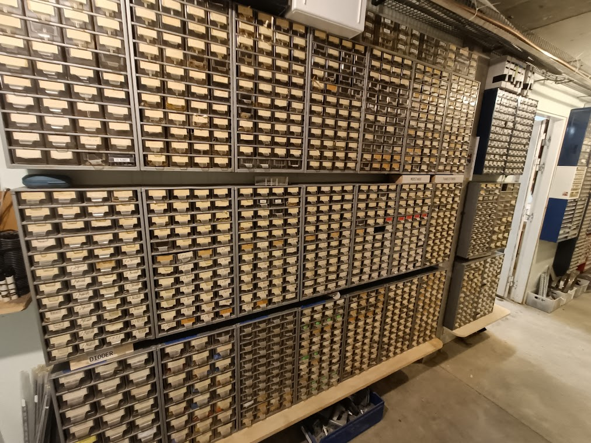

I Open Space Aarhus' elektronikværksted har du mulighed for at arbejde på dine elektronikprojekter, hvad end de måtte være. Her er der mulighed for at arbejde på dit allerførste Arduino-projekt eller din hjemmebyggede fluxkapacitor.

Følgende liste er et lille udpluk af værktøj tilgængeligt i elektronikværkstedet:

<ul>
    <li>Loddekolber</li>
    <li>Hot air reflow station</li>
    <li>Laboratoriestrømforsyninger</li>
    <li>Oscilloskop</li>
    <li>Varmepistoler</li>
    <li>IR-loddeovn</li>
    <li>Multimeter</li>
    <li>Komponentlager</li>
</ul>



